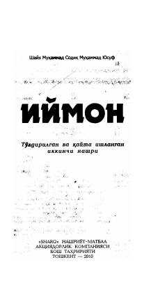

IImon asoslari va islomiy e'tiqod haqida mukammal diniy qo'llanma.
Bu kitob Shayx Muhammad Sodiq Muhammad Yusuf tomonidan yozilgan bo'lib, islomiy imon (e'tiqod) asoslarini Qur'on va hadislar dalillari bilan tushuntiradi. Kitob 1991-yilda birinchi marta nashr etilgan, 2010-yilda esa to'ldirilgan va qayta ishlangan ikkinchi nashri chop etilgan. Unda imonning shu'balari, ahli sunna va jamoat mazhabiga ko'ra pok aqida masalalari batafsil yoritilgan.